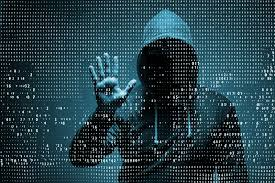

Sikre
En måte å unngå virus på datamaskinen, er å skaffe seg en virusbeskyttelse. Denne vil nekte innstalering av programmer som inneholder virus. Hvis du vil være veldig sikker på nettet, kan du skaffe deg en VPN, som krypterer dataene dine slik at ingen kan lese de.
1.
En annen måte å unngå hacking på er å bruke et passord som ikke kan bli gjettet. Hvis du skulle søke pået nettside som eks:"Digital trends" kan du se om passordet ditt er der. Hvis ditt passord er der anbefaler vi deg å bytte passord.
2.
Bytt passord regelmessig. Det er ikke bare passord som du må bytte regelmessig, men software oppdateringer også. Du må huske å oppdatere alt hele tiden eks: apple kommer med nye software updates hele tiden som oppgrader sikringen eks Two Factor Authentications.
3.
Ha flere passord. Det er viktig at du har flere passord enn bare en. Hvis en av passordene dine blir hacket, så må de fortsatt komme seg gjennom de andre.